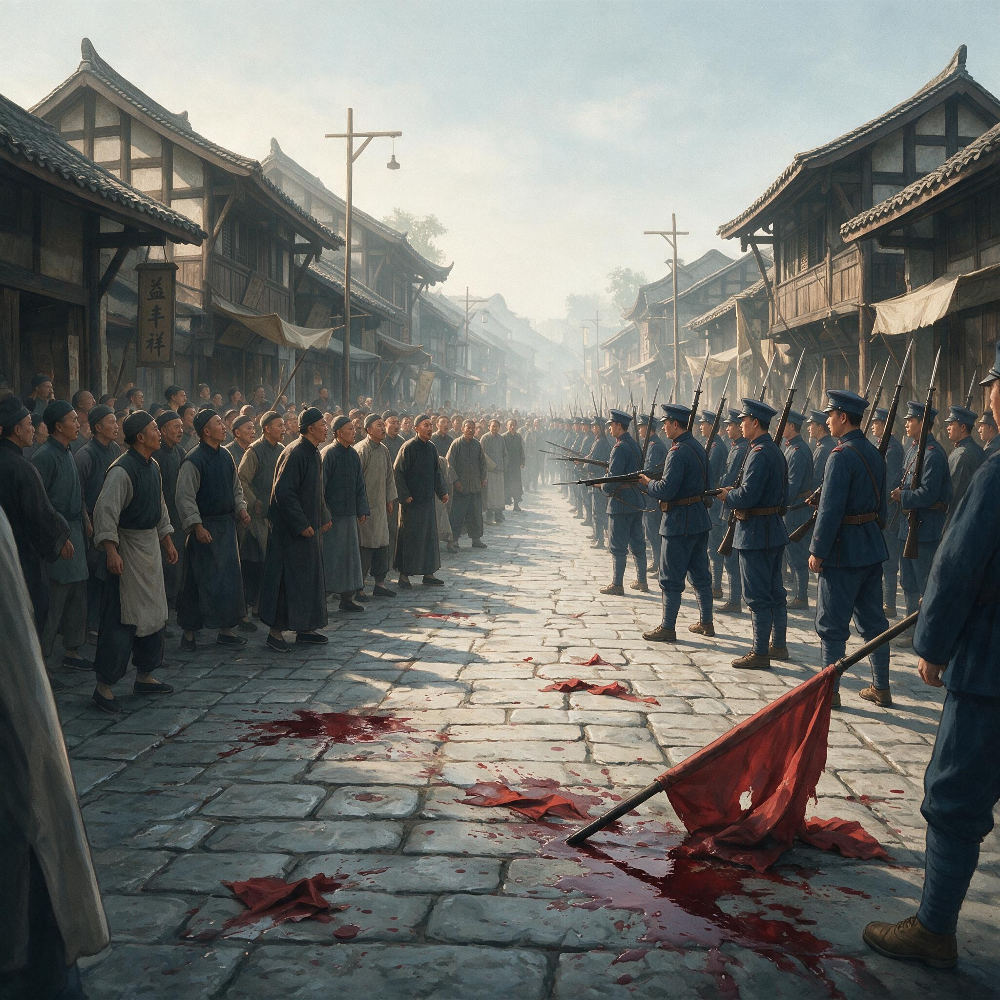

第 10 章
九月七日：枪声与血泊
九月七日的成都，天还没亮透，督署街一带的铺板门已经被人从里面一块块卸下来。不是开市，是有人在往外看。一个剃头匠后来跟茶馆里的人说，他那天天不亮就听见街上有脚步声，比平时巡街的更沉、

成都督署街清军与民众对峙场景
AI 生成插图，非史实影像。
更急，不是一两个人的靴底磕在石板上，是成排的人。他从门缝里往外瞄了一眼，看见巡防军的兵，扛着枪，往督署方向赶。他没敢开门，把铺板又顶了回去。脚步声持续了大约半个时辰。然后，天亮了。
赵尔丰这一夜几乎没有合眼。签押房里的灯从九月六日晚上一直亮到七日清晨，案上的名单已经被翻得起了毛边。名单上九个人名，按着咨议局、保路同志会、川汉铁路公司的职衔排列，最上面的是蒲殿俊，其次是罗纶，再往下是颜楷、张澜、邓孝可、叶茂林、王铭新、江三乘、彭兰村。名单边上搁着盛宣怀的回电，措辞比上一封更短，也更冷：川事已迫，望即遵旨办理，勿再延宕。
赵尔丰把名单交给了卫队管带田征葵。田征葵问了一句，用什么名目。赵尔丰说，议事。
这个借口不算高明，但也并非毫无根据。自六月保路同志会成立以来，总督署与咨议局、铁路公司之间的交涉从未中断，蒲殿俊等人出入督署是常有的事。八月二十四日全城罢市以后，双方还在署内谈过几次，虽然每次都不欢而散，但“议事”这个名目至少还能用一次。
自六月保路同志会成立以来，总督署与咨议局、铁路公司之间的交涉从未中断，蒲殿俊等人出入督署是常有的事。八月二十四日全城罢市以后，双方还在署内谈过几次，虽然每次都不欢而散，但“议事”这个名目至少还能用一次。
清晨六时许，督署的差役分头出发，往各人寓所送去口信：督部堂有要事相商，请即刻过署一叙。蒲殿俊住在学道街一处租来的宅子里。
差役敲门的时候，他刚起床不久，正在看前一天晚上股东会送来的几份文书，内容是关于罢市期间铁路公司账目的清理情况。他接了传话，没有起疑。据事后他本人的记述，当时他以为赵尔丰终于愿意在罢市和抗粮问题上做出某种让步，或者至少愿意坐下来谈条件。他换了件干净的长衫，跟同住的叶茂林一道出了门。
罗纶住在离他不远的总府街。差役到的时候，他正在院子里洗脸。他比蒲殿俊多问了一句：督部堂叫了哪些人？差役照单子念了几个名字。罗纶听了，觉得阵容齐全，不像是单独训话，更像是正式协商。他擦了把脸，戴上帽子就出了门。
颜楷、张澜、邓孝可等人也先后接到了通知。张澜当时住在川汉铁路公司宜昌分公司驻成都的办事房里，正在跟几个宜昌来的职员谈工程停工后的善后事宜。他听到传话后，把桌上的图纸卷起来收好，对同事说了一句：回来再议。后来他没有再回到那间屋子。
九个人中，最晚到的是彭兰村。他住在城东，离督署最远，赶到的时候已经快七点半了。他后来回忆说，进督署大门的时候，看见门外的巡防军比平时多了一倍，心里隐约觉得不对劲，但转念一想，既然是议事，加强警戒也说得过去。他迈过门槛，身后的两扇朱漆大门就被人从里面推上了。
九个人被引到督署二堂左侧的一间厅房里。厅房里摆着长条桌和几把椅子，桌上没有茶，也没有文书。他们坐下以后，等了大约一炷香的工夫，没有人进来招呼。
罗纶起身走到门口，被门外的卫兵挡了回来。卫兵只说了一句话：督部堂稍后就到。“稍后”持续了将近一个时辰。在这段时间里，督署外面已经发生了他们不知道的变化。
大约八点钟前后，蒲殿俊等人的家人发现他们久去未归，开始互相打听。有人跑到咨议局去问，咨议局的大门已经被巡防军封了。有人跑到铁路公司去问，公司门口也站了兵。消息开始在街面上扩散：蒲先生他们被扣了。
最初传出来的消息并不完整。有人说是请去谈话，有人说是被抓了，还有人说是被请去保护起来了。但不管哪种说法，核心事实只有一个：九个人进了督署，没有再出来。
成都的街巷网络在传递消息方面极其高效。自八月二十四日罢市以来，各街各巷的居民已经形成了一套自发的联络机制——哪条街出了什么事，用不了半个时辰就能传到相邻的三条街以外。这套机制的核心节点是茶馆、米铺和井台。九月七日这天上午，这些节点几乎同时被激活了。
最先做出反应的是东大街一带的商户。这条街是成都最繁华的商业街，也是罢市期间消息最灵通的地段。几个绸缎庄的伙计跑到街面上，挨家挨户地敲门：蒲先生、罗先生被扣在督署了，大家快去要人。“要人”这个说法本身就有动员力。
在四川的民间语境里，“要人”不是请求，而是主张——我有权利把人要回来，因为那些人是我选出来的，是我的代表。咨议局的议员是民选的，保路同志会的会长是股东会推的，铁路公司的董事是股东选的。这些身份在官府眼里也许只是“绅”，但在成都市民眼里，他们是“我们的人”。
这个“我们”并不是空泛的。四川铁路公司的股本中，有相当一部分来自租股，也就是按田赋摊派的强制性股款。中等农户每亩每年要缴三到五钱银子，对许多小户人家而言，这笔钱不是可以忽略的开销。正因为如此，铁路不是官督商办的抽象事业，而是千家万户实实在在的负担与期待。当股东的权益受到威胁时，城里的小商贩、街坊的住户、城外种田的佃农，都觉得这件事与自己有关。他们可能没有读过铁路公司的章程，也不完全理解四国借款合同的条款，但他们知道，自己多年缴出去的钱，如今要被人拿走了。
大约九点钟前后，第一批市民开始往督署辕门方向聚集。这些人主要是东大街和学道街附近的商户和居民，人数大约三四百。
他们没有带武器，没有打旗帜，也没有喊口号。他们带的是两样东西：香烛和光绪皇帝的牌位。
光绪牌位这个东西，在保路运动中是一个极其特殊的符号。它的来源可以追溯到八月二十四日罢市当天。那天，成都各街各巷的居民在街口摆出了光绪皇帝的牌位，牌位前供着香烛。这个做法最初是民间自发的，后来被保路同志会认可并推广。
它的逻辑是这样的：铁路商办是先皇批准的，铁路国有是当今朝廷违背先皇旨意的行为；我们供奉先皇牌位，是在捍卫先皇的遗命，不是在反对朝廷。这个逻辑在官府面前构成了一个极其棘手的政治难题。
你不能砸先皇的牌位，不能抓供奉先皇的人，更不能说供奉先皇是犯法的。但你也知道，这些人供奉先皇的目的，恰恰是在对抗你。九月七日这天上午，涌向督署辕门的市民手中捧着的，就是这些牌位。
牌位的制作工艺很简陋——大多是木板上贴黄纸，纸上写着“大清德宗景皇帝之神位”几个字，字迹有工整的也有歪斜的，有的还带着墨迹未干的晕染痕迹。
捧着牌位的人以中老年人和妇女居多，年轻人当然也有，但不占多数。这不是一次有组织的青年学生运动，而是一次由普通市民自发参与的请愿。
到上午十点钟左右，督署辕门外已经聚集了大约两千人。这个数字是根据当时在场的一名巡防军军官事后的估计，他在报告中写道：“约二千余人，多系老弱妇孺。”这个描述带着轻蔑，但也透露出一个事实：聚集者确实不是有组织的冲击队伍。
两千人跪在辕门外的空地上。前排的人捧着光绪牌位，后排的人举着香烛。香烛燃烧产生的烟气在人群上空形成了一层薄薄的青雾，隔着雾气看过去，督署的朱漆大门和门前石狮显得模糊而遥远。没有人喊口号。
最初的半个时辰里，人群发出的主要声音是哭声和祷告声。妇女们跪在地上，一边烧香一边哭诉，内容大抵是“求大老爷放人”“蒲先生是好人”“罗先生是为了大家”。这些哭诉没有明确的政治诉求，它们表达的是传统社会中弱者向强者乞求公道的情感模式。
但在这个特定的时刻，这种情感模式本身就是一种政治行为——它用道德压力替代了暴力冲击，用跪求替代了对抗，用先皇的权威替代了朝廷的权威。
辕门内，巡防军已经列好了阵。大约两百名士兵分三排站在大门内侧和两侧墙下，第一排持枪立正，第二排持枪稍息，第三排作为预备队站在后面。士兵们穿的是清末新式军服，手里拿的是进口的后膛步枪——这是光绪末年四川陆续购置的装备，比旧式抬枪和鸟铳先进了整整一代。持枪的士兵和跪拜的市民之间，隔着大约三十步的距离。
这三十步，是两种完全不同的权力逻辑之间的距离。市民手中的光绪牌位代表的是传统王朝的合法性——皇帝是万民之父，子民有冤可以向父亲哭诉，父亲有责任为子民做主。士兵手中的步枪代表的是现代国家的暴力——国家垄断暴力工具，任何挑战国家权威的行为都可以被武力镇压。这两种逻辑在九月七日这天上午的辕门外同时存在，并且彼此无法理解。
对峙持续了将近两个时辰。从上午十点到中午十二点，辕门外的人数还在增加。
后来陆续赶来的人已经挤不进前排了，只能站在后面，站在督署街两侧的巷口和屋檐下。总人数大概达到了三千到四千人——不同的记载有不同的说法，官方的报告倾向于压低数字，民间的回忆倾向于抬高数字，但三千到四千是一个各方记载大致可以重叠的区间。
正午时分，太阳移到头顶，青石地面被晒得发烫。跪着的人开始出现体力不支的情况，有几个老妇人晕倒了，被旁边的人抬到屋檐下阴凉处。
人群里开始有人喊：放人！放人！但喊声不大，也不整齐，更像是一种焦躁的自言自语。
辕门内的士兵也开始出现焦躁的迹象。他们从清晨就列队站在这里，已经站了四五个小时，没有换岗，没有喝水，也没有接到任何命令。第一排持枪立正的士兵手臂开始发酸，有人偷偷把枪拄在地上，被军官喝了一声又端起来。他们的紧张是可以理解的——面前是几千个活生生的人，虽然跪着，虽然捧着牌位，虽然以老弱妇孺为主，但人数本身构成了一种无声的压力。巡防军的士兵大多出身贫寒，对本地民情未必熟悉。
他们受的是新式操练，学的是齐步、举枪、瞄准。操练场上的假想敌是土匪和乱民，不是眼前这种人。眼前这些人没有刀，没有枪，没有冲杀的叫喊，只是跪在地上，举着木牌，焚着香。这幅景象对士兵的直接冲击，甚至比真正的骚乱更大，因为它不合操典上的任何一种情况。
田征葵站在辕门内侧的台阶上，不时往里面看一眼。他在等赵尔丰的命令。赵尔丰在署内。
从清晨诱捕九人到中午时分，赵尔丰一直没有离开签押房。他不断接到辕门外人群聚集的报告：先是几百人，然后是一两千人，然后是三四千人。每一次报告都让他更加确信自己的判断——这是一场有组织的对抗行动，拘捕九人是正确的决策，否则局面会更加失控。这个判断有一个致命的缺陷：它把自发聚集误判为有组织行动。
成都市民涌向督署辕门，不是任何人策划或指挥的，而是消息扩散后市民基于共同情感和共同利益做出的自主选择。
保路同志会的组织网络当然在其中起了作用——各街各巷的联络人传递了消息，茶馆里的演说提供了情感动员——但从“传递消息”到“组织冲击”之间，有一条赵尔丰没有看清的界限。
他没有看清这条界限的原因是多方面的。盛宣怀和端方不断施加的压力让他没有时间仔细分辨；四川数月来的罢市、抗粮已经让他对民众动员产生了深刻的警惕；而他自己作为封疆大吏的政治本能告诉他，面对聚集的人群，最安全的假设就是最坏的假设。
这个政治本能并非赵尔丰个人独有。在晚清最后几年的地方督抚中，普遍存在一种焦虑：民间的动员能力正在超过官府的治理能力。咨议局、商会、教育会、地方自治公所，这些新式机构把分散的士绅和市民编织成了网络。这个网络平时可以协助官府征税、办学、修路，但一旦与官府对立，也能够在极短的时间内组织起罢市、抗粮、围署。赵尔丰不信任这个网络，又不能离开这个网络来治理四川。他只能选择最传统的手段：抓人。抓了人之后，他不知道下一步该怎么做。
下午一点钟前后，赵尔丰做出了一个决定：命令田征葵驱散人群。这个决定的具体内容在不同的记载中有不同的说法。一种说法是，赵尔丰下令“开枪驱散”；另一种说法是，他下令“鸣枪示警”；还有一种说法是，他下令“如敢冲入即行开枪”。这三种说法之间的差别极其微妙——“驱散”不一定需要射击，“示警”可以朝天开枪，“如敢冲入”则设定了一个前提条件。但在一线执行命令的士兵和军官那里，这些微妙的差别很难被精确地理解和执行。
记录只到这一步。后世的材料没有留下赵尔丰亲口说出“开枪”二字的直接凭据，也没有留下田征葵当时接令后的原话。留下的只是命令传下去之后的枪声。
田征葵接到命令后，走到辕门内侧，命令第一排士兵举枪。辕门外的人群看到了这个动作。
前排的人开始往后退，但后排的人不知道前面发生了什么，还在往前挤。人群出现了短暂的骚动。有人喊了一声：不要怕，我们有先皇牌位！这句话在当时的语境里是有道理的。
几个月来，成都市民一直用光绪牌位作为护身符，官府也确实没有对牌位采取过暴力行动。但这个道理有一个前提：对方承认牌位的合法性。当对方决定不再承认任何合法性的时候，牌位就只是一块木板。
枪声在下午一点到两点之间响起——确切的时间不同记载有出入，但都在这个时段内。关于枪声的来源，同样存在两种不同的说法。一种说法来自幸存者的回忆：一名巡防军士兵在推搡中枪支走火，第一声枪响后，其他士兵在混乱中跟着开了枪。另一种说法来自官方的解释：人群试图冲入督署，巡防军奉命开枪阻止。这两种说法并非完全互斥。
在高度紧张的对峙状态下，推搡、走火和奉命开枪可能同时发生——士兵的紧张可能导致走火，走火可能被军官理解为冲击的信号，军官的命令可能导致齐射。事后追究“谁开了第一枪”也许永远无法得到确切的答案，但更重要的不是第一枪的来源，而是第一枪之后发生的事情。枪声响了不止一声。根据多名幸存者的回忆，枪声是“连珠”式的，也就是说，不是单发射击，而是连续射击。
这说明开枪不是个别士兵的失控行为，而是有组织的火力输出。巡防军向密集的人群开了枪。辕门外瞬间陷入混乱。跪着的人站起来想跑，站着的人被推倒在地上，后排的人还不知道发生了什么就被前面涌来的人潮撞翻。香烛掉在地上，烧着了散落的黄纸牌位，青石地面上冒起一小簇一小簇的火苗。
哭声、喊声、枪声混在一起，督署街变成了一条没有方向的河流，每个人都在往远离枪口的方向跑，但没有人知道哪个方向是安全的。伤亡发生在最初的几分钟内。子弹打在密集的人群里，几乎没有落空的可能。中弹的人有的当场倒地，有的跑了几步才倒下，有的被后面的人踩踏而过。
根据事后不同来源的统计，当场死亡的人数在二十到四十人之间，受伤者更多。官方报告称“击毙数人”，民间记载称“死者数十”，具体数字至今仍有争议，但数十人死伤是可以确定的。死者中有数名手持光绪牌位的老人。这个细节在事后的民间传播中被反复提及——官府杀了供奉先皇牌位的人。这个说法在政治上的杀伤力远远超过了死伤数字本身。
它意味着朝廷不仅不保护子民，甚至不保护先皇的象征。跪求青天的子民被青天的士兵杀了，这个悖论摧毁了传统合法性在四川的最后残余。枪声停歇后，辕门外留下了满地的牌位、香烛、鞋子和血迹。伤者被同伴搀扶着撤离，死者被暂时留在原地——没有人敢回去收尸，因为巡防军仍然持枪站在辕门内。直到傍晚时分，督署才派人出来清理现场，把尸体运走，用水冲洗地面的血迹。
消息的传播从枪声响起的瞬间就开始了。第一批把消息带出督署街的是那些逃离现场的幸存者。他们跑回各自的街巷，向邻居和家人讲述刚才发生的事情。这些口头叙述充满了恐惧和愤怒，但细节往往模糊不清——有多少人死了？
谁开的枪？为什么开枪？每个讲述者给出的答案都不完全一样。从下午到傍晚，消息以督署街为圆心向外扩散。每条街的茶馆都成了信息交换的中心，人们聚在那里听幸存者讲述、互相补充细节、表达愤怒和恐惧。
在这个过程中，信息不可避免地发生了变形：死伤数字被不断放大，开枪的原因被简化为“赵尔丰下令屠杀”，死者的身份被赋予了越来越多的象征意义——“手持先皇牌位的老人被杀”这个细节被反复强调并赋予了殉道者的光环。电报被官府封锁了。九月七日当天和次日，成都发往外地的电报全部经过督署的审查，血案的消息没有被允许通过官方渠道传出。
但这套封锁机制有一个漏洞：它只能封锁电报，不能封锁口传。九月七日晚间，成都各城门已经加强了戒备，但仍有不少人通过各种方式出了城——有的拿着出城办事的凭证，有的买通了守门的士兵，有的干脆翻城墙。这些人中，有的是保路同志会的成员，受命将消息带往各州县；
有的是普通市民，因为恐惧而决定离开成都投奔乡下的亲戚；也有的是外地来的商贩，目睹了血案后决定尽快离开这个是非之地。他们带走的是同一个消息的不同版本。但不管哪个版本，核心事实都是一样的：督署辕门外开了枪，死了人，死者是请愿的百姓。
在辕门外对峙的两个时辰里，时间不是匀速流逝的。每一个跪在地上的市民都以自己的身体为刻度，丈量着督署大门到青石地面之间的距离。膝盖最先感知到时间的重量——起初是石板的凉意透过布料渗进来，然后是骨节开始发酸，再后来是整条腿都麻了，麻到站起来的时候不知道自己还有没有腿。
一个住在冻青树街的老妇人后来跟邻居说，她那天跪了不知道多久，只记得自己盯着面前的那块石板看，石板上有一道裂纹，从左边一直裂到右边，她盯着那道裂纹，觉得它像一条河。她手里捧着的牌位是头天晚上赶制的，松木板，黄表纸，纸边上还留着剪刀的毛茬。
她男人在光绪三十四年缴过一块半银子的租股，到现在也没见着铁路的影子。她来督署门口跪着，不是因为有人叫她来，而是因为她觉得蒲先生那些人是为了她男人才被抓的。
这种朴素的因果逻辑在人群中普遍存在。每一个跪着的人几乎都能说出自己与铁路之间的一笔账：三亩水田每年摊四钱五分银子，一间铺面每年摊一两二钱，一个靠挑水为生的苦力每年也要摊几分银子的租股——他没有田，但租股的负担最终会转嫁到他挑水的工钱里。这些账目平时埋在柴米油盐的日常底下，不被提起，也不被细算。
但在这个上午，当几千个人跪在同一片空地上，膝盖抵着同一片青石，他们忽然发现彼此之间的账目是可以互相印证的。一个绸缎庄的伙计跪在剃头匠旁边，两人本来不认识，但聊了几句就发现，他们缴的租股比例是一样的，因为绸缎庄的铺面和剃头铺的铺面在官府的地籍册上属于同一等。这种发现本身并不能改变跪求的结果，但它把“我”的委屈变成了“我们”的委屈，把个体对官府的乞求变成了群体对权力的质疑。
在队列的另一侧，巡防军士兵也在承受着时间的磨损。前三排的士兵已经站了将近三个时辰，膝盖虽然没跪在地上，但持枪立正的姿势让他们的手臂和肩膀承受了持续的张力。一名第一排的士兵后来在退役后跟同乡说起那天的事，他说他当时最害怕的不是人群会冲过来，而是他自己手里的枪会走火。
这支步枪是光绪三十三年从湖北枪炮厂调来的，已经用了四年，枪机磨损得厉害，平时操练就有走火的事情发生。他杵在地上撑着枪托，手心全是汗，手指不敢离开扳机太远——军官下了令，随时准备开枪——但又不敢靠得太近，怕用力过猛扣响了。
他在这种矛盾中站了整个上午，后脖颈晒得发烫，汗顺着脊背流下去，军服背后湿了一大片，又被太阳晒出一层白色的盐霜。他的队列里不止他一个人处于这种状态。第二排有一个士兵反复调整肩上的子弹带，来来回回紧了三回，每次都在打完最后一个结之后又松开重来。第三排一个年纪最小的兵一直在咽口水，喉结上下滚动，但他自己没意识到。
田征葵注意到了队列里的焦躁。他是老行伍出身，跟过赵尔丰在川边的军事行动，知道长时间的等待比冲锋更消耗士气。他在台阶上踱了几个来回，最后决定再催一次。他派了一个弁目进签押房，向赵尔丰报告辕门外的人数已经超过三千，人群情绪不稳，请求下一步指示。赵尔丰仍然坐在签押房里。
案上的茶从早上沏好以后就没换过，茶汤已经凉透了，上面浮着一层暗褐色的茶锈。他面前摊着蒲殿俊等人在厅房里被扣后从身上搜出来的物品清单：几份铁路公司的账册摘抄、一封盛宣怀致端方的密电抄件、一份保路同志会近期的讲演要点。这些物品在赵尔丰看来都是证据，证明九人入署不是被动应召，而是有备而来。
这个判断在逻辑上并非全无依据——蒲殿俊的确随身携带了与保路运动相关的文书，这说明他进督署之前确实有在议事中据理力争的打算。但问题在于，“有备而来”不等于“组织冲击”。蒲殿俊携带文书是为了在谈判中进行申辩，而不是为了指挥一场暴力行动。
当天夜里，有几家报纸的编辑已经拿到了血案的消息。他们试图赶印号外，但督署的审查人员已经在印刷所门外等候。号外最终还是印了出来，不过已经是次日清晨的事，而且措辞被删改得相当谨慎——没有出现“屠杀”二字，只说“辕门外发生冲突，伤毙数人”。
然而，民间的口头传播比报纸号外更快，也更有力量。报纸可以被删改，活人嘴里的哭喊却无法审查。在号外送达之前，茶馆里的讲述早已完成了对事件的定性。成都城内的夜晚降临得比平时更早。
不是因为天黑的快，而是因为没有人点灯。各街各巷的住户早早地关了门，熄了灯，街上只有巡防军的巡逻队在走动。士兵们的脚步声在空旷的石板路上回响，每一条街都像是空的，但每一条街的门窗后面都有人在听。偶尔有压抑的哭声从某扇窗户后面传出来，但很快就止住了。不是不悲伤，是悲伤也不敢出声。
而在成都城外的驿道上，几匹快马正在夜色中疾驰。马蹄敲打着碎石路面，惊起路边树上的宿鸟。骑马的人怀里揣着血案的消息——不是写在纸上的正式文书，而是口传的叙述。
他们要去的地方是成都周边的各个州县：龙泉驿、双流、新都、温江、郫县、崇宁。驿道两侧的田野在夜色中一片寂静，稻子已经收割了，田里只剩下稻茬和积水。马蹄声在这片寂静中传得很远，每一个听到的人都知道，这么晚了还在赶路的马，一定带着要紧的消息。而这些消息将在一两天内到达它们的目的地。届时，成都城内的枪声就不再只是一场地方性的悲剧，而将成为点燃整个四川的火种。